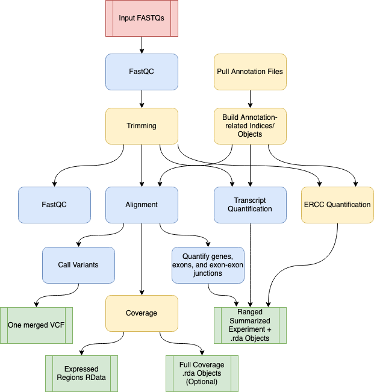

4 Pipeline Overview

Diagram representing the “conceptual” workflow traversed by SPEAQeasy. Here some nextflow processes are grouped together for simplicity; the exact processes traversed are enumerated below. The red box indicates the FASTQ files are inputs to the pipeline; green coloring denotes major output files from the pipeline; the remaining boxes represent computational steps. Yellow-colored steps are optional or not always performed; for example, preparing a particular set of annotation files occurs once and uses a cache for further runs. Finally, blue-colored steps are ordinary processes which occur on every pipeline execution.
4.1 Preparation Steps
The following processes in the pipeline are done only once for a given configuration, and are skipped on all subsequent runs:
4.1.1 Downloading required annotation files
- PullAssemblyFasta: when using default annotation, this process pulls the genome fasta from GENCODE or Ensembl and saves to the directory specified by
--annotation. This is the file against which FASTQ reads are aligned. - PullGtf: similarly to PullAssemblyFasta, this process pulls the “.gtf” transcript annotation file.
- PullTranscriptFasta: similar to the above two processes, this one pulls the fasta of transcript sequences (against which FASTQ reads are pseudoaligned).
4.1.2 Preparing annotation files for direct use
- BuildAnnotationObjects: a number of files are produced for internal use by SPEAQeasy. These include a text file of sequence ranges and a few R data files with annotation information (regarding genes, junctions, and exons).
- BuildHISATIndex: the Hisat2 aligner requires an indexed genome- this process builds that file for the given genome fasta.
- BuildKallistoIndex: similarly to Hisat2, the transcript quantification tool Kallisto requires that the transcripts be indexed. This process builds the required index.
- BuildSalmonIndex: when Salmon is used as the pseudoaligner (with the command option
--use_salmon), an index like that for Kallisto is built in this process.
4.2 Main Workflow Steps
- QualityUntrimmed: FASTQ files are ran through FastQC as a preliminary quality control measure. By default, the presence of “adapter content” determined in this process decides whether a given sample is trimmed in the next step. See the
--force_trimcommand option for modifying this default behavior. - Trimming: See “QualityUntrimmed” above- FASTQ inputs are trimmed either based on adapter content from FastQC, or regardless of this measure.
- QualityTrimmed: a post-trimming assessment of quality metrics (again with FastQC) for each sample.
- InferStrandness: determines the “strandness” of each sample (“forward”, “reverse”, or “unstranded”/mixed). This is done via pseudoalignment to the transcriptome with Kallisto- for a subset of reads in a given sample, pseudoalignment is attempted assuming each of the three strandness possibilities. The number of successfully aligned reads in each case is used to determine a final “observed strandness”. By default an error is thrown for any disagreement between “observed strandness” and user-provided
--strand. See the--force_strandcommand option and the configuration variablenum_reads_infer_strandfor tuning the behavior of this process. - CompleteManifest: this process is mostly for internal use by the pipeline: an additional “observed strandness” column is added to the user-provided
samples.manifestto associate each sample with a strandness value (required for many processes, such as alignment). This file is also saved to the pipeline outputs, allowing the user to see in one location the strandness determination for each sample. - SingleEndHISAT and PairedEndHISAT: though single-end and paired-end alignment are managed by separate processes internally, both perform alignment to the genome with Hisat2.
- SamtoBam: a post-processing step to alignment; this process drops low-quality alignments (as determined by Hisat2), converts SAM format to compressed BAM, then sorts and indexes the final file.
- PrimaryAlignments: subsets the alignment BAM to only “primary alignments”, as determined by the samtools bit-wise flag 0x100. Indexes the result file.
- Junctions: extracts and quantifies exon-exon junctions from the BAM of primary alignments.
- Coverage: an optional process (see the
--coveragecommand option) to convert the alignment BAMs to .wig format. This is in preparation for the WigToBigWig process, and does not have outputs/results of its own (other than logs). - WigToBigWig: the follow-up process to Coverage, producing BigWig files containing coverage information.
- MeanCoverage: combines coverage information for each strand, by taking a mean of bigwig coverage across all samples for each strand. Typically, one pipeline run will have just one strand (and will match what is provided by the
--strandoption), but if different samples have different observed strandness (see InferStrandness process), and the--force_strandoption is provided, samples are separated by strand in this process. - ExpressedRegions: the “final” process in the path from alignment SAM to expression data. This process utilizes the R package derfinder to determine expressed genomic regions, and a number of plots and RData objects are produced to summarize and visualize coverage and expression-related information.
- FeatureCounts: this process produces counts of genes and exons from the BAM produced by SamtoBam.
- TXQuantKallisto or TXQuantSalmon: these steps perform pseudoalignment of FASTQ reads to the transcriptome. We have found that Kallisto performs this job with superior speed for equal or better quality results, and thus it is the default tool used. The process TXQuantSalmon is run instead when the option
--use_salmonis provided. - ERCC: this is an optional process which is run when the option
--erccis specified. This performs pseudoalignment with Kallisto to a special index as defined by the External RNA Controls Consortium. This process is intended to be run only for samples which contain ERCC spike-ins, as a quality-control measure. - CountObjects: this process collects gene and exon counts from FeatureCounts, exon-exon junction counts from Junctions, QC metrics from QualityUntrimmed, transcript pseudoalignment results from TXQuantKallisto or TXQuantSalmon, and results from ERCC if applicable. The result are analysis-ready R data files and RangedSummarizedExperiment R objects, combining key information gathered throughout the pipeline run.
- VariantCalls: this process is performed for human references only (i.e. “hg38” or “hg19” values for
--reference) - VariantsMerge: this process combines the per-sample vcf files from VariantCalls into a single vcf for the experiment.
- CoverageObjects: this process takes the coverage bigwig files from WigToBigWig and calculates “full coverage”- namely, the fullCoverage function is called, from the Bioconductor package derfinder. This process is not run by default, but can be enabled via the option
--fullCov.